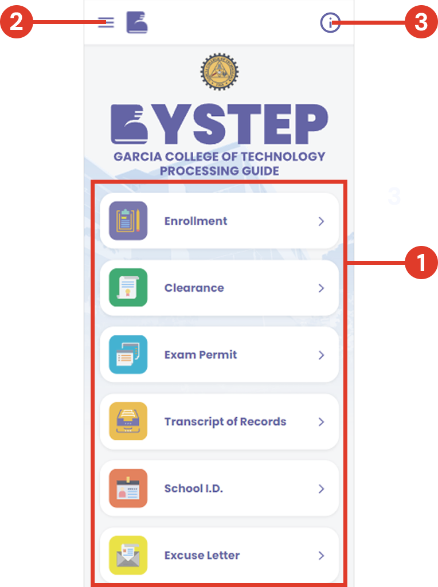
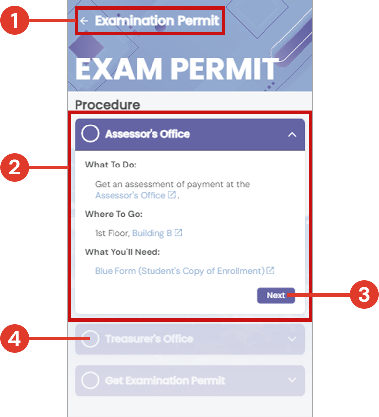
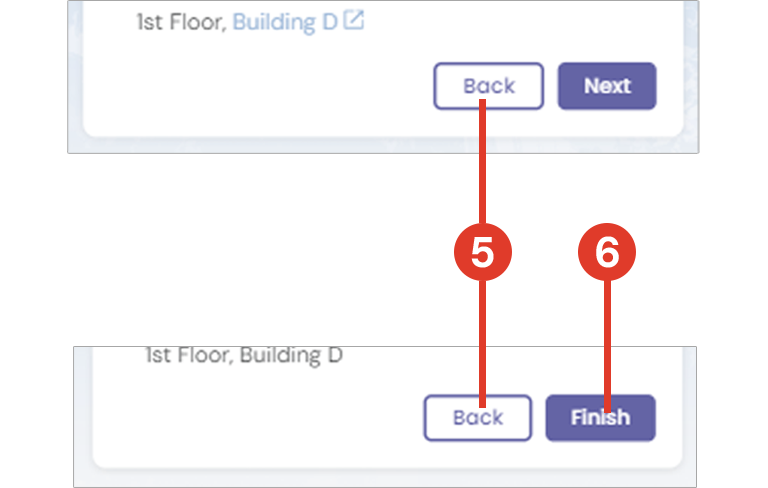
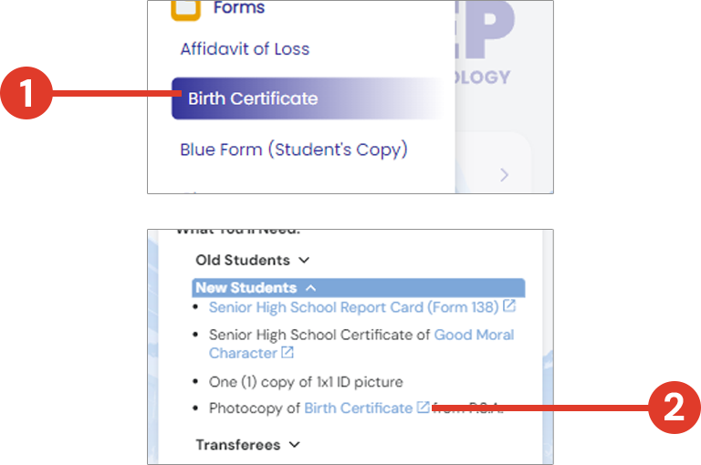
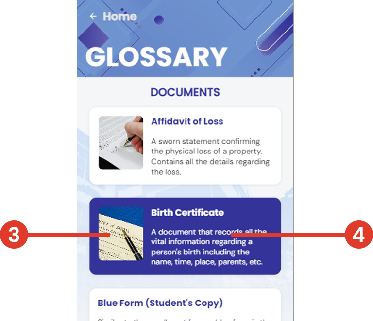
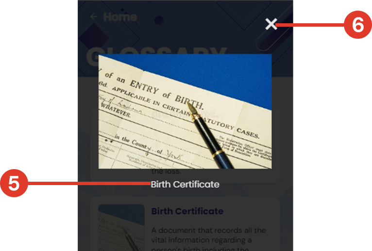

Home
USER MANUAL
Introduction
Welcome to ByStep: Garcia College of Technology Processing Guide. This user manual will provide you with comprehensive instructions on how to use the ByStep website and application effectively to simplify your college processing tasks.
Table of Contents
I. Access the Website
- Open your preferred browser.
- Enter the following URL: https://mariano-shem.github.io/ByStep/
- Press Enter to load the ByStep homepage.
II. Download the Mobile App
- If you prefer using the mobile application, click on the provided link.
- This will redirect you to the Google Drive page where you can download the ByStep mobile app.
- Follow the download and installation instructions to set up the app on your device.
III. Home Page
- Processes: List of available college-related processes.
- Sidebar icon: To access the sidebar menu.
- Help button: To aid user when using the website or application.
IV. Navigating the Process Page
Browse and select through the list of college processes on the home page.
-

- Home button: To navigate back to the home page.
- Current step: Contains information for the user to follow to.
What To Do section explains what the user should do at this point.
Where To Go section points to the place inside the school.
What You'll Need section lists the necessary documents to complete the step.
Hyperlink texts can be clicked on to redirect users to the glossary page. - Next button: To proceed to the next step in the process.
- Next steps in the process. 
- Back button: To go back to the previous step of the process.
- Finish button: Can be found in the last step of the process. Click to head back to the home page.
VI. Accessing the Glossary Page
There are two ways to access the glossary page:
-

- Click on a sidebar list entry to open its glossary entry.
- Click on the hyperlinks found on the steps of the process page. 
- Photo reference: of a glossary entry. Click to view full image.
- Text area: to provide information.
- Photo label.
- To close the image.
When viewing the photo in full view:
